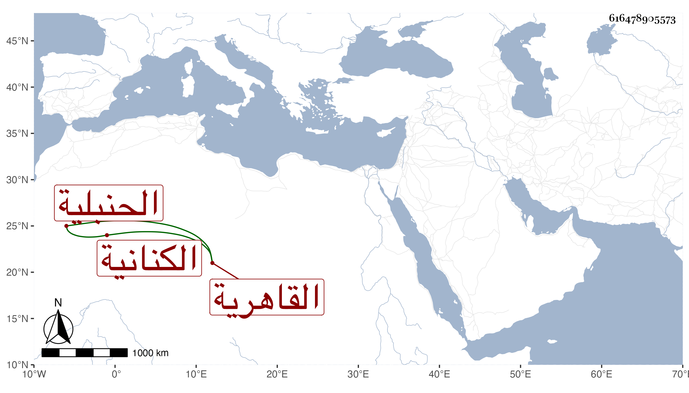

0902Sakhawi.DawLamic.ITO20230111-ara1.EIS1600.616478905573
Biography ID: 616478905573
22
آمنة ابنة ناصر الدين أبي الفتح نصر الله بن أحمد بن محمد بن أبي الفتح ابن هاشم بن اسماعيل بن إبراهيم بن نصر الله بن أحمد الكنانية العسقلانية القاهرية الحنبلية عمة العز أحمد بن إبراهيم الماضي ، ولدت تقريبا سنة سبعين وسبعمائة ، وأجاز لها في استدعاء مؤرخ بسنة ثلاث وتسعين جماعة منهم أبو بكر بن محمد بن الزكي عبد الرحمن المزي ومحمد بن محمد بن داود بن حمزة وابراهيم ابن أبي بكر بن عمر بن السلار والشهاب أحمد بن أبي بكر بن أحمد بن عبد الهادي ، وحدثت باليسير قرأت عليها بعض الأجزاء وكانت أصيلة جليلة . ماتت في رمضان سنة ثلاث وخمسين رحمها الله وإيانا .
